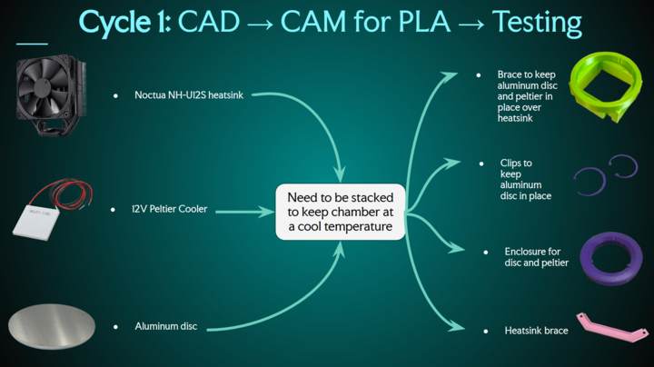
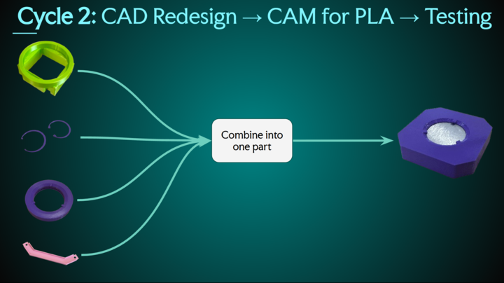
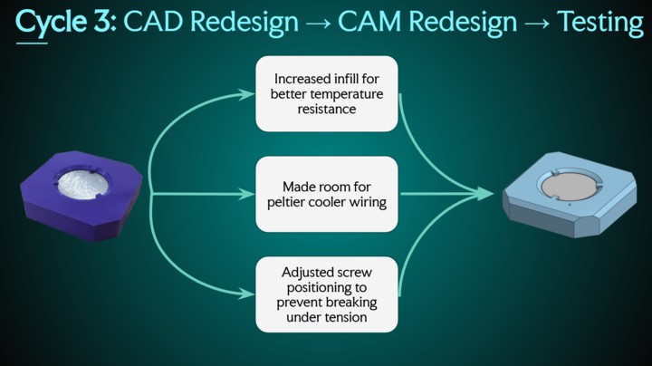
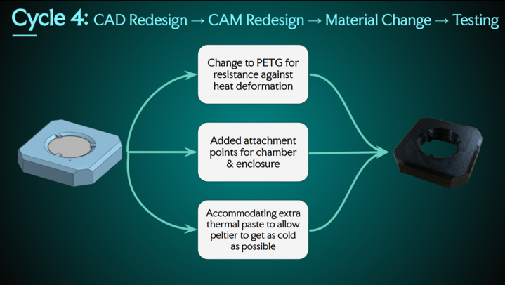

Design Project #5 Stage 2 — Prototyping and Testing
A visual record of four prototype cycles, documenting how the design changed through CAD, CAM, and material iteration.
Project Overview
This page is a picture-based record of Stage 2 of Design Project #5. It focuses on how the prototype changed across four cycles of iteration: making the first version, changing the shape in CAD, changing the machine settings in CAM, and finally changing the material. Each photo documents a different step in the design process, showing how testing and fabrication decisions shaped the final prototype.
Iteration Cycles
Cycle 1 — First Prototype

Initial prototype printed in PLA to test the first concept and basic fit.
Testing the first version to identify major structural and usability issues.
Cycle 2 — CAD Redesign

Updated CAD geometry after learning from the first prototype.
Second prototype showing shape changes intended to improve performance.
Cycle 3 — CAM Redesign

Third prototype with slicing and machine-setting changes to improve print quality and strength.
Testing the CAM-adjusted version to evaluate whether print settings improved reliability.
Cycle 4 — Material Change

Fourth prototype using a different material to improve flexibility, durability, or comfort.
Final round of testing to compare the material change against earlier versions.
Full Gallery
Quick Facts
Course: ENGR11
Project: Design Project #5 Stage 2
Focus: Prototyping and Testing
Method: 4 cycles of iteration
Workflow: CAD → CAM → Material → Testing
Cycle Structure
• Cycle 1: Make something
• Cycle 2: Change the shape
• Cycle 3: Change the machine settings
• Cycle 4: Change the material
What to Show in Photos
• CAD screenshots
• Printed prototypes
• Testing setup
• Comparison shots between cycles
• Final improved version
Note
Replace the placeholder image names in this file with your actual photos from each iteration cycle.